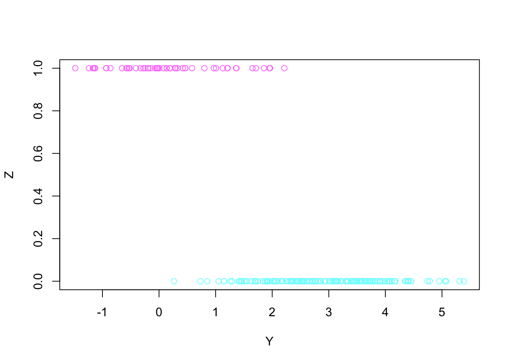
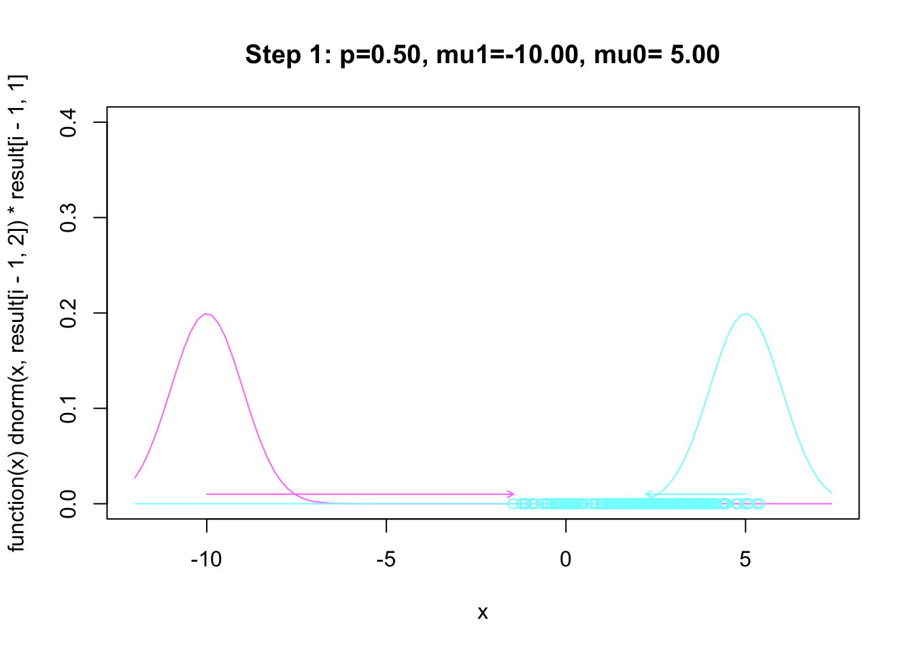
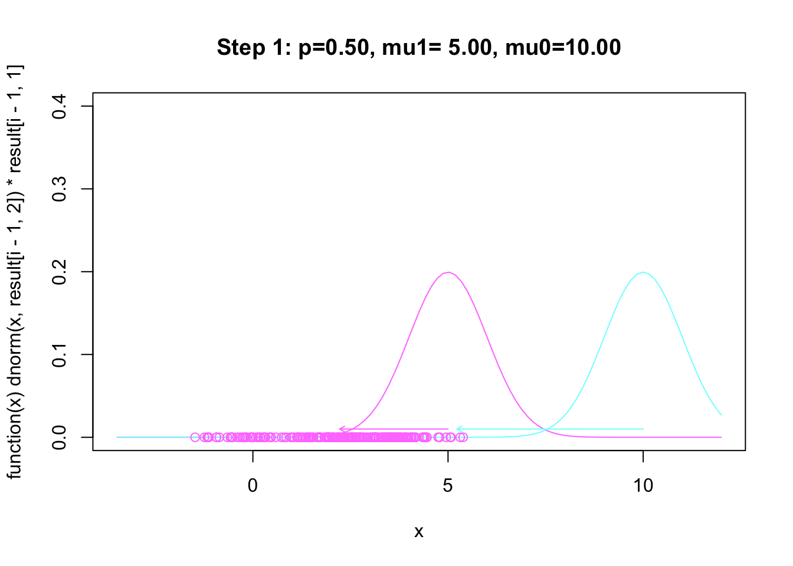
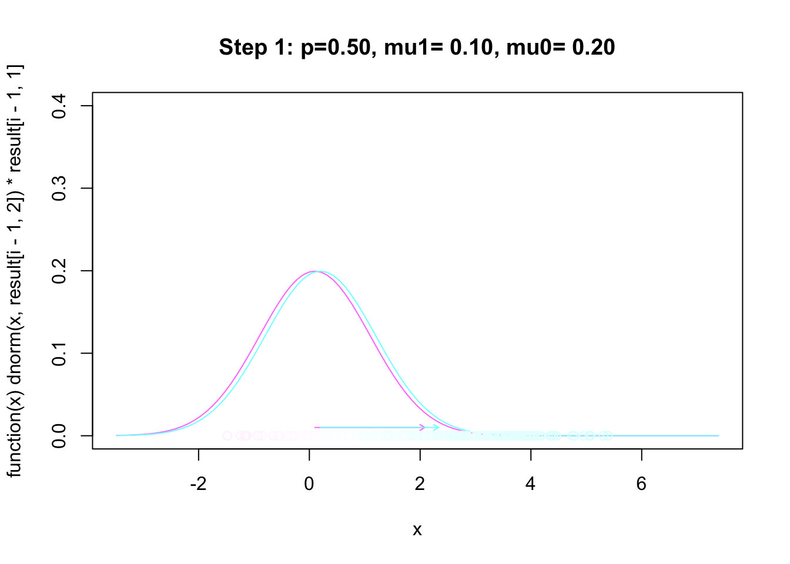
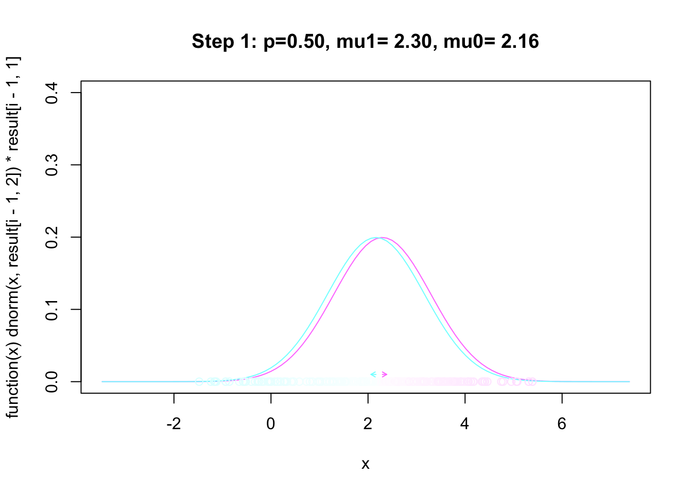
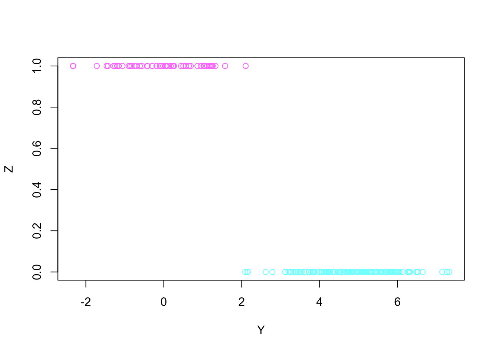

log_sum_exp <- function(log_x)
{
max_log_x <- max(log_x)
max_log_x + log( sum(exp(log_x - max_log_x) ))
}
log_like_obs <- function(theta,Y)
{
log_jointlike <- cbind(log( theta[1]) + dnorm(Y,theta[2],1,log = TRUE),
log(1 - theta[1]) + dnorm(Y,theta[3],1, log = TRUE))
sum(apply(log_jointlike,1,log_sum_exp))
}
em_mixnorm <- function(theta0,Y,no_iters)
{ col_weigh <- cm.colors(100)
result <- matrix(0,no_iters + 1,4)
colnames(result) <- c("p","mu1","mu0","log_lik")
result[1,1:3] <- theta0
result[1,4] <- log_like_obs(theta0,Y)
for(i in 1:no_iters + 1) {
log_like1 <- dnorm(Y,result[i-1,2],1,log = TRUE) + log(result[i-1,1])
log_like0 <- dnorm(Y,result[i-1,3],1,log = TRUE) + log(1-result[i-1,1])
log_like_average <- apply(cbind(log_like1, log_like0),1,log_sum_exp)
weighs <- exp(log_like1 - log_like_average)
## making plots showing steps
xlim <- range (Y, result[i-1,2:3])+c(-2,2)
plot(function(x) dnorm(x, result[i-1,2])*result[i-1,1], ylim=c(0,0.4),
xlim[1], xlim[2], col=col_weigh[100])
title(main = sprintf("Step %g: p=%4.2f, mu1=%5.2f, mu0=%5.2f",
i-1, result[i-1,1],result[i-1,2],result[i-1,3]))
plot(function(x) dnorm(x, result[i-1,3])*(1-result[i-1,1]),
xlim[1], xlim[2], col=col_weigh[1], add=TRUE)
points(Y, rep(0, length(Y)), col=col_weigh[ceiling(weighs*100)] )
#update p
result[i,1] <- mean(weighs)
#update u1
result[i,2] <- sum(Y*weighs)/sum(weighs)
result[i,3] <- sum(Y*(1-weighs))/sum(1-weighs)
result[i,4] <- log_like_obs(result[i,1:3],Y)
#plot the change of mu
arrows(result[i-1,2], 0.01,result[i,2],0.01,
length = 0.05,col=col_weigh[100])
arrows(result[i-1,3], 0.01,result[i,3],0.01,
length = 0.05,col=col_weigh[1])
}
invisible(result)
}7 EM Algorithm
8 Fitting a Normal Mixture Model with EM
gen_mixnorm <- function(theta,n)
{
Z <- 1*(runif(n) < theta[1])
Y <- rep(0,n)
for(i in 1:n){
if(Z[i]==1) Y[i] <- rnorm(1,theta[2],1)
else Y[i] <- rnorm(1,theta[3],1)
}
col_weigh <- cm.colors(2)
plot (Y, Z, col = col_weigh[Z+1])
Y
}data <- gen_mixnorm(c(0.3,0,3),200)
em_mixnorm(c(0.5,-10,5),data,20)
em_mixnorm(c(0.5,5,10),data,40)
em_mixnorm(c(0.5,0.1,0.2),data,40)
random_label <- rbinom(length(data), size=1, prob = 0.5)
em_mixnorm(c(0.5, mean(data[random_label==1]),mean(data[random_label==0])),
data,40)
data2 <- gen_mixnorm(c(0.3,0,5),200)random_label <- rbinom(length(data2), size=1, prob = 0.5)
em_mixnorm(c(0.5, mean(data2[random_label==1]),
mean(data2[random_label==0])),
data2,40)
Compare with other optimization methods
log_like_obs <- function(theta,Y)
{
log_joint <- cbind(log(theta[1]) + dnorm(Y,theta[2],1,log = TRUE),
log(1 - theta[1]) + dnorm(Y,theta[3],1, log = TRUE))
sum(apply(log_joint,1,log_sum_exp))
}
## define negative log likelihood function
neg_loglike_obs <- function (theta,Y)
{
-log_like_obs(theta,Y)
}
## define negative log likelihood function with a transformed parametrization
neg_loglike_obs_transf <- function(ttheta,Y)
{
theta <- ttheta
theta[1] <- 1/(1+exp(-ttheta[1]))
neg_loglike_obs(theta,Y)
}
## applying optimization algorithms
try (nlm (neg_loglike_obs, p = c(0.3,0,3), Y = data))$minimum
[1] 372.7562
$estimate
[1] 0.2527433 -0.2792517 2.8843968
$gradient
[1] -1.645617e-04 -8.560619e-05 8.562784e-05
$code
[1] 1
$iterations
[1] 8try (nlm (neg_loglike_obs, p = c(0.5, -10, 5), Y = data))$minimum
[1] 856.6042
$estimate
[1] 8.694628e-06 -1.000001e+01 4.037842e+00
$gradient
[1] 200.0018 0.0000 390.6077
$code
[1] 2
$iterations
[1] 22log(0.3/0.7)[1] -0.8472979## Newton method
try (nlm (neg_loglike_obs_transf, p = c(log(0.3/0.7),0,3), Y = data))$minimum
[1] 372.7562
$estimate
[1] -1.084029 -0.279247 2.884397
$gradient
[1] -1.206055e-05 -1.136868e-06 1.828829e-05
$code
[1] 1
$iterations
[1] 6try (nlm (neg_loglike_obs_transf, p = c(0,-10,5), Y = data))$minimum
[1] 475.1673
$estimate
[1] -16.613965 -9.999310 2.084804
$gradient
[1] 1.217343e-05 0.000000e+00 -4.018949e-05
$code
[1] 1
$iterations
[1] 24## Nelder-Mead
try (optim (p = c(log(0.3/0.7),0,3),neg_loglike_obs_transf, Y = data, method="Nelder-Mead"))$par
[1] -1.0841807 -0.2794934 2.8843893
$value
[1] 372.7562
$counts
function gradient
74 NA
$convergence
[1] 0
$message
NULLtry (optim (p = c(0,-10,5),neg_loglike_obs_transf, Y = data, method="Nelder-Mead"))$par
[1] -1.0841697 -0.2796854 2.8845034
$value
[1] 372.7562
$counts
function gradient
170 NA
$convergence
[1] 0
$message
NULL## Conjugate Gradient
try (optim (p = c(0,0,3),neg_loglike_obs_transf, Y = data, method="CG"))$par
[1] -1.0840267 -0.2792445 2.8843995
$value
[1] 372.7562
$counts
function gradient
75 25
$convergence
[1] 0
$message
NULLtry (optim (p = c(0,-10,5),neg_loglike_obs_transf, Y = data, method="CG"))$par
[1] -6.090906 -9.999639 2.078632
$value
[1] 475.6188
$counts
function gradient
305 101
$convergence
[1] 1
$message
NULLWe see that these optimization algorithms applied to the observed log likelihood are more fragile when the initial values are not well chosen. Nelder-mead algorithm is more stable.
9 Fitting a censored poisson model with EM
Define EM algorithms
# The data consists of n observed counts, whose mean is m, plus c counts
# that are observed to be less than 2 (ie, 0 or 1), but whose exact value
# is not known. The counts are assumed to be Poisson distributed with
# unknown mean, lambda.
#
# The function below finds the maximum likelihood estimate for lambda given
# the data, using the EM algorithm started from the specified guess at lambda
# (default being the mean count with censored counts set to 1), run for the
# specified number of iterations (default 20). The log likelihood is printed
# at each iteration. It should never decrease.
#n is the number of observed poisson counts
#c is the number of missed poisson counts
#y_bar is is the mean of observed poisson counts
EM.censored.poisson <- function (n, y_bar, c, lambda0=(n*y_bar+c)/(n+c),
iterations=20)
{
# Set initial guess, and print it and its log likelihood.
lambda <- lambda0
cat (0, lambda, log.likelihood_obs(n,y_bar,c,lambda), "\n")
# Do EM iterations.
for (i in 1:iterations)
{
# The E step: Figure out the distribution of the unobserved data. For
# this model, we need the probability that an unobserved count that is
# either 0 or 1 is actually equal to 1, which is p1 below.
y_mis <- lambda / (1+lambda)
# The M step: Find the lambda that maximizes the expected log likelihood
# with unobserved data filled in according to the distribution found in
# the E step.
lambda <- (n*y_bar + c*y_mis) / (n+c)
# Print the new guess for lambda and its log likelihood.
cat (i, lambda, log.likelihood_obs(n,y_bar,c,lambda), "\n")
}
# Return the value for lambda from the final EM iteration.
lambda
}
log.likelihood_obs <- function (n, y_bar, c, lambda)
{
n*y_bar*log(lambda) - (n+c)*lambda + c*log(1+lambda)
}Generate a dataset
y <- rpois(200,3)
c<- sum(y < 2)
y_bar <- mean(y[y >=2]); y_bar[1] 3.588889We see that the naive mean with y >=2 is an upward biased estimate of the true mean 3
Implementing EM
EM.censored.poisson(length(y)-c,y_bar,c,lambda0=100, iterations = 10) -> lambda.em0 100 -16932.76
1 3.32901 140.4328
2 3.3069 140.4476
3 3.306781 140.4476
4 3.306781 140.4476
5 3.306781 140.4476
6 3.306781 140.4476
7 3.306781 140.4476
8 3.306781 140.4476
9 3.306781 140.4476
10 3.306781 140.4476 EM.censored.poisson(length(y)-c,y_bar,c,lambda0=y_bar, iterations = 10) -> lambda.em0 3.588889 138.1813
1 3.308208 140.4475
2 3.306788 140.4476
3 3.306781 140.4476
4 3.306781 140.4476
5 3.306781 140.4476
6 3.306781 140.4476
7 3.306781 140.4476
8 3.306781 140.4476
9 3.306781 140.4476
10 3.306781 140.4476 Compare with Other Optimization Methods
log.likelihood_obs <- function (n, y_bar, c, lambda)
{
n*y_bar*log(lambda) - (n+c)*lambda + c*log(1+lambda)
}
neg_loglike_obs <- function (n, y_bar, c, lambda)
{
- log.likelihood_obs (n, y_bar, c, lambda)
}
try (nlm (neg_loglike_obs, p = y_bar, n=length(y)-c, y_bar= y_bar, c=c))$minimum
[1] -140.4476
$estimate
[1] 3.30678
$gradient
[1] 2.177968e-05
$code
[1] 1
$iterations
[1] 3try (nlm (neg_loglike_obs, p = 100, n=length(y)-c, y_bar= y_bar, c=c))$minimum
[1] -140.4476
$estimate
[1] 3.306779
$gradient
[1] 1.089844e-05
$code
[1] 1
$iterations
[1] 11try (optim (p = y_bar, neg_loglike_obs, method="CG", n=length(y)-c, y_bar= y_bar, c=c))$par
[1] 3.306781
$value
[1] -140.4476
$counts
function gradient
141 26
$convergence
[1] 0
$message
NULLtry (optim (p = 100, neg_loglike_obs, method="CG", n=length(y)-c, y_bar= y_bar, c=c))$par
[1] 3.306781
$value
[1] -140.4476
$counts
function gradient
180 34
$convergence
[1] 0
$message
NULLtry (optim (p = y_bar, neg_loglike_obs, method="Nelder-Mead", n=length(y)-c, y_bar= y_bar, c=c))$par
[1] 3.307105
$value
[1] -140.4476
$counts
function gradient
22 NA
$convergence
[1] 0
$message
NULLtry (optim (p = 100, neg_loglike_obs, method="Nelder-Mead", n=length(y)-c, y_bar= y_bar, c=c))$par
[1] 3.305664
$value
[1] -140.4476
$counts
function gradient
42 NA
$convergence
[1] 0
$message
NULL